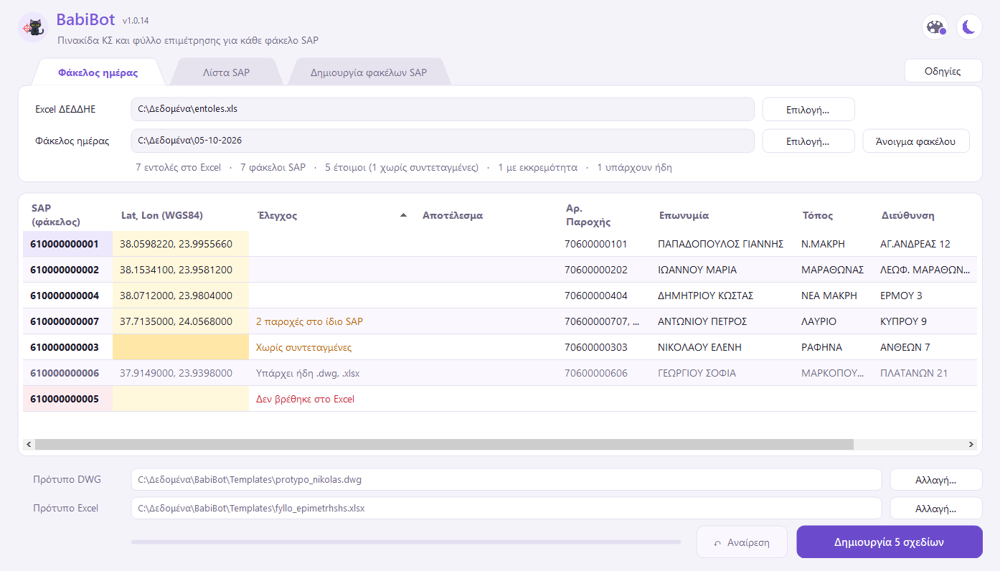

Διαλέγετε το Excel του ΔΕΔΔΗΕ και τον φάκελο της ημέρας. Για κάθε υποφάκελο με αριθμό SAP, το BabiBot φτιάχνει μέσα στον φάκελο δύο αρχεία: το σχέδιο <SAP>.dwg με συμπληρωμένη πινακίδα και το φύλλο επιμέτρησης <SAP>.xlsx. Το Excel μπορεί να το κατεβάσει μόνο του από τη σελίδα του ΔΕΔΔΗΕ (κουμπί «Λήψη από ΔΕΔΔΗΕ»), μαζί με τον αριθμό GIS κάθε εντολής, που γράφεται στο «ΟΝ. ΕΡΓΟΥ (GIS)» της πινακίδας.
Πατήστε «Λήψη για Windows» στη σελίδα λήψης και ανοίξτε το BabiBot-Setup.exe. Ακολουθήστε τον οδηγό (δεν χρειάζονται δικαιώματα διαχειριστή) και θα βρείτε το BabiBot στο μενού Έναρξη. Το Setup κατεβάζει πάντα την τελευταία έκδοση.
Αν την πρώτη φορά τα Windows γράψουν «Τα Windows προστάτευσαν τον υπολογιστή σας»: πατήστε «Περισσότερες πληροφορίες» → «Εκτέλεση οπωσδήποτε». (Το πρόγραμμα δεν είναι ψηφιακά υπογεγραμμένο.)
Microsoft WebView2: η «Λήψη από ΔΕΔΔΗΕ» χρησιμοποιεί το WebView2 Runtime της Microsoft (το ίδιο που έχει ο Microsoft Edge). Στα περισσότερα Windows υπάρχει ήδη· αν λείπει, το Setup το εγκαθιστά μόνο του (χρειάζεται internet την ώρα της εγκατάστασης).
Ενημερώσεις: όταν βγει νέα έκδοση, εμφανίζεται πάνω δεξιά ένα καμπανάκι με το μήνυμα «Νέα έκδοση». Πατήστε το → «Ενημέρωση» και το BabiBot ενημερώνεται μόνο του: κλείνει και ξανανοίγει σε λίγα δευτερόλεπτα. Ο έλεγχος γίνεται όταν ανοίγετε το πρόγραμμα (χρειάζεται internet).

Στη φωτογραφία δεν φαίνεται το κουμπί «⬇ Λήψη από ΔΕΔΔΗΕ» (δεξιά από το «Επιλογή…» του Excel) ούτε το γρανάζι των Ρυθμίσεων (πάνω δεξιά, δίπλα στο κουμπί «Οδηγίες»). Δείτε την επόμενη ενότητα.
Αντί να μπαίνετε εσείς στη σελίδα του ΔΕΔΔΗΕ και να κατεβάζετε το Excel, το BabiBot το φέρνει μόνο του. Σας ζητά μόνο το captcha του login.
Μία φορά, στις Ρυθμίσεις (το γρανάζι πάνω δεξιά → καρτέλα «ΔΕΔΔΗΕ»):
| Όνομα χρήστη / Κωδικός | Τα στοιχεία σας στο portal του ΔΕΔΔΗΕ. Το BabiBot τα γράφει μόνο του στη σελίδα login. Ο κωδικός αποθηκεύεται κρυπτογραφημένος και ανοίγει μόνο από τον δικό σας λογαριασμό των Windows. Αν τα αφήσετε κενά, τα γράφετε εσείς κάθε φορά. |
| Γραφεία | Οι κωδικοί των γραφείων που θέλετε, με κόμμα, π.χ. 770,771,772. |
| Ημ. Επίδοσης από | Φέρνει τις εντολές με ημερομηνία επίδοσης από αυτή και μετά, π.χ. 01-01-2023 (μορφή ηη-μμ-εεεε). |
Η κατάσταση «Ανοιχτές» και το συνεργείο «Όλα» είναι σταθερά, όπως τα βάζετε και στο portal.
Πάνω από τη λίστα υπάρχουν τέσσερις καρτέλες. Το Excel και τα πρότυπα είναι τα ίδια στις τρεις πρώτες· η τέταρτη είναι αυτόνομη. (Τα ονόματα των καρτελών αλλάζουν από τις Ρυθμίσεις.)
| Καρτέλα | Πότε τη χρησιμοποιείτε |
|---|---|
| Φάκελος ημέρας | Οι φάκελοι SAP υπάρχουν ήδη, όλοι μέσα σε έναν φάκελο ημέρας (τα βήματα παραπάνω). |
| Λίστα SAP | Οι φάκελοι SAP υπάρχουν αλλά είναι σκόρπιοι μέσα σε έναν φάκελο (π.χ. του Dropbox). Επιλέγετε αυτόν τον φάκελο και γράφετε τους αριθμούς SAP (+ Προσθήκη SAP, ✕ για αφαίρεση, ή Ctrl+V για πολλούς μαζί από μια στήλη του Excel). Το BabiBot βρίσκει τον φάκελο κάθε SAP σε οποιοδήποτε βάθος και γράφει μέσα το .dwg και το .xlsx. Αν δεν βρεθεί ακριβώς ένας φάκελος με αυτό το όνομα, το σχέδιο δεν δημιουργείται. |
| Δημιουργία φακέλων SAP | Οι φάκελοι δεν υπάρχουν και θέλετε να φτιαχτούν από το BabiBot. Επιλέγετε το Excel και τον φάκελο προορισμού (π.χ. ο νέος φάκελος της ημέρας· το παράθυρο επιτρέπει «Δημιουργία νέου φακέλου»), γράφετε τους αριθμούς SAP όπως στη Λίστα SAP και πατάτε «Δημιουργία φακέλων». Μέσα στον προορισμό φτιάχνεται ένας φάκελος με όνομα κάθε SAP και μέσα του το .dwg και το .xlsx. Μόνο για SAP που υπάρχουν στο Excel· αν υπάρχει ήδη φάκελος με το ίδιο όνομα, παραλείπεται και δεν αγγίζεται. |
| Συμπλήρωση λίστας | Αυτόνομη καρτέλα, με δικό της Excel και φάκελο. Διαβάζει τα PDF των σχεδίων ενός φακέλου και συμπληρώνει στη λίστα παραδοτέων (Excel) την παροχή, τη διεύθυνση, την περιοχή, την ημερομηνία επίδοσης, το κόστος μελέτης και τον μελετητή (το όνομα του μελετητή ορίζεται στις Ρυθμίσεις → «Μελετητής»). Το αρχικό Excel δεν αλλάζει: γράφεται αντίγραφο «… (συμπληρωμένο).xlsx» δίπλα του. |
| Μήνυμα | Τι σημαίνει / τι κάνετε |
|---|---|
| (κενό) | Έτοιμο. Θα δημιουργηθεί. |
| N παροχές στο ίδιο SAP | Θα δημιουργηθεί κανονικά, με όλους τους αριθμούς παροχής. Απλή ενημέρωση. |
| Χωρίς συντεταγμένες | Το Excel δεν έχει συντεταγμένες. Θα δημιουργηθεί κανονικά· πλάτος/μήκος και X/Y μένουν όπως στο πρότυπο, για να τα συμπληρώσετε στο σχέδιο. Ή γράψτε τις στην κίτρινη στήλη πριν τη «Δημιουργία». |
| Δεν βρέθηκε στο Excel | Ο αριθμός SAP του φακέλου δεν υπάρχει στο Excel. Συνήθως το Excel είναι παλιό: κατεβάστε νέο. |
| Υπάρχει ήδη .dwg, .xlsx | Ο φάκελος έχει ήδη σχέδιο ή φύλλο. Δεν αγγίζεται ποτέ. Αν θέλετε να ξαναφτιαχτεί, σβήστε τα αρχεία πρώτα. |
| Υπάρχει ήδη ο φάκελος | (Δημιουργία φακέλων SAP) Στον προορισμό υπάρχει ήδη φάκελος με αυτό το όνομα. Δεν αγγίζεται. |
| Επιλέξτε τον φάκελο… | Λείπει ο φάκελος ημέρας / προορισμού / αναζήτησης ή ο αριθμός SAP. |
| Δημιουργήθηκε | Το έφτιαξε μόλις το BabiBot. |
Η λίστα δείχνει πρώτα τα έτοιμα, μετά όσα θέλουν συντεταγμένες, μετά όσα υπάρχουν ήδη και τελευταία όσα δεν βρέθηκαν. Κλικ σε επικεφαλίδα ταξινομεί κατά τη στήλη· δεξί κλικ → «Ταξινόμηση: έτοιμα πρώτα» για επιστροφή.
| Πινακίδα | Από πού |
|---|---|
| ΑΡ. ΠΑΡΟΧΗΣ | «Αρ. Παροχής» χωρίς το 1ο και τα 2 τελευταία ψηφία (70602244402 → 06022444). Με πολλές παροχές, όλες με κόμμα. |
| ΕΠΩΝΥΜΙΑ ΠΕΛΑΤΗ | «Ονομα» |
| ΤΟΠΟΣ / ΔΙΕΥΘΥΝΣΗ ΕΡΓΟΥ | «Πόλη» / «Οδός» + «Αρ.» (όπως στο Excel — διορθώστε στο σχέδιο αν θέλετε) |
| ΑΡ./ΗΜΕΡ. ΑΙΤΗΜΑΤΟΣ | «Ημ. Επίδοσης» |
| Κουτάκια SAP | Ο αριθμός SAP (όνομα του φακέλου). |
| ΟΝ. ΕΡΓΟΥ (GIS) | Η στήλη «Αρ. GIS», που προσθέτει η «Λήψη από ΔΕΔΔΗΕ». Αν λείπει (π.χ. Excel που κατέβηκε με το χέρι, ή εντολή χωρίς GIS στο portal), μένει κενό. |
| ΓΕΩΓΡ. ΠΛΑΤΟΣ / ΜΗΚΟΣ | Οι συντεταγμένες της λίστας, 7 δεκαδικά με κόμμα (37,9302603) |
| X / Y (ΕΓΣΑ87) | Υπολογισμός όπως το calcfun.eu, ακέραια μέτρα (τα δεκαδικά κόβονται) |
| Φύλλο επιμέτρησης | «ΦΥΛΛΟ ΕΠΙΜΕΤΡΗΣΗΣ ΕΝΤΟΛΗΣ ΔΙΚΤΥΟΥ SAP/PS :610172611581» (γραμμή 6) |
Λήψη από ΔΕΔΔΗΕ: «Δεν φορτώθηκε η σελίδα…» / «Η σελίδα δεν έχτισε το μενού» — Στη σελίδα login δεν είχε επιλεγεί εφαρμογή. Διαλέξτε «Ενέργειες Πεδίου» στο αναπτυσσόμενο μενού πριν πατήσετε «Είσοδος».
Λήψη από ΔΕΔΔΗΕ: «Λείπει το Microsoft WebView2 Runtime» — Εγκαταστήστε ξανά το BabiBot (το Setup το εγκαθιστά, χρειάζεται internet).
Λήψη από ΔΕΔΔΗΕ: λάθος στοιχεία ή captcha — Η σελίδα το γράφει και μένει στο login. Ξαναγράψτε το captcha ή διορθώστε τα στοιχεία στις Ρυθμίσεις → «ΔΕΔΔΗΕ». Αν κλείσετε το παράθυρο του login, η λήψη ακυρώνεται χωρίς πρόβλημα.
Λήψη από ΔΕΔΔΗΕ: αργεί — Η σελίδα του ΔΕΔΔΗΕ είναι συχνά αργή. Περιμένετε, ή πατήστε ✕ και ξαναδοκιμάστε αργότερα.
«Δεν ήταν δυνατή η εγγραφή… είναι ανοιχτό;» — Κλείστε το σχέδιο στο AutoCAD ή το φύλλο στο Excel και ξαναπατήστε «Δημιουργία».
«Δεν βρέθηκε η στήλη…» στο Excel — Μην ανοίγετε και αποθηκεύετε το Excel του ΔΕΔΔΗΕ πριν το δώσετε στο BabiBot: το Excel το σώζει ως «ιστοσελίδα» και χάνονται τα δεδομένα. Κατεβάστε το ξανά (ή «Αποθήκευση ως» → Βιβλίο εργασίας Excel .xlsx).
Στο AutoCAD: «Non Autodesk DWG…» — Εμφανίζεται σε σχέδια που δεν έφτιαξε πρόγραμμα της Autodesk. Είναι ακίνδυνο· κλείνει μόνιμα με την εντολή DWGCHECK = 0.